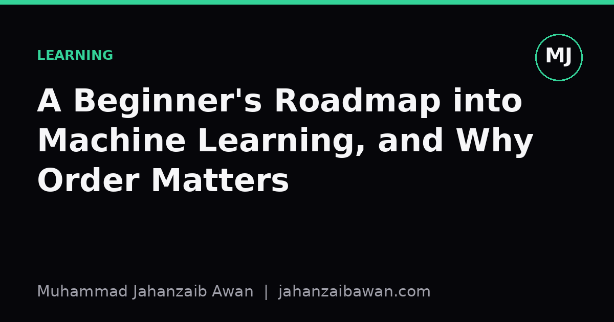

A Beginner's Roadmap into Machine Learning, and Why Order Matters
The sequence you learn in shapes how well you understand what follows. Here is an order that builds real intuition rather than brittle habits.

Why sequence beats speed
Most beginners treat machine learning as a list of topics to tick off: a bit of Python, a course on neural networks, a Kaggle competition, repeat. The problem is not that any of these are wrong, it is that the order you encounter them in determines whether you build genuine intuition or a pile of disconnected tricks. If you jump to deep learning before understanding what a train-test split actually protects you from, you will eventually ship a model that looked brilliant in a notebook and failed quietly in the real world.
I say this as someone who has made exactly that mistake. Early on, I spent a weekend tuning a model's architecture before I had any idea whether my validation score was even measuring something honest. The architecture was never the problem. My evaluation setup was leaking information from the future into the past, and no amount of tuning could fix that, because the number I was optimising against was lying to me. That experience reshaped how I think about learning order: foundations are not boring prerequisites to get through quickly, they are the thing that makes everything after them trustworthy.
Order matters because each stage of learning either exposes or hides the assumptions underneath the next stage. Skip statistics and you will not notice when a model is confidently wrong. Skip evaluation discipline and you will not notice when a result is too good to be true. The roadmap below is not the only valid path, but it is one that front-loads the ideas that make later mistakes visible instead of invisible.
Stage one: statistics and a simple baseline, before anything fancy
Start with distributions, variance, correlation versus causation, and the idea of a sampling error. This sounds dry next to neural networks, but it is the difference between knowing a result is noise and being fooled by it. Concretely: if you train a classifier on 200 examples and get 78 percent accuracy, you need enough statistical grounding to ask whether that number would move by ten points if you had drawn a different 200 examples. Without that instinct, every small sample result looks like a discovery.
Alongside statistics, build your first baseline before you build your first real model. A baseline is something embarrassingly simple: predict the majority class, predict the mean, or use a plain linear regression. Suppose you are predicting whether a customer will cancel a subscription, and 85 percent of customers do not cancel. A model that always predicts 'will not cancel' scores 85 percent accuracy while doing nothing useful. If your carefully engineered model scores 86 percent, you have learned almost nothing, and you would never know that without first measuring the baseline.
This stage also includes learning to read a confusion matrix and to separate accuracy from precision and recall. In the cancellation example, the baseline has zero recall on the group that actually matters, the customers who do cancel. A beginner who only ever looks at accuracy will not notice this. A beginner who has internalised the baseline habit will ask, immediately, what the model is getting right for the wrong reasons.
Stage two: classical models and honest evaluation, before deep learning
Once you can build and question a baseline, move to classical algorithms: linear and logistic regression, decision trees, k-nearest neighbours, perhaps a gradient-boosted tree. These models are interpretable enough that you can inspect their mistakes directly, which teaches you what overfitting actually looks like rather than just the definition of the term. If a decision tree with no depth limit gets 99 percent training accuracy and 71 percent on held-out data, you are watching overfitting happen in real time, and that visual memory is worth more than any textbook paragraph on the subject.
This is also the right point to learn proper train, validation, and test splits, and specifically to learn when a random split is the wrong choice. If your data has a time component, such as predicting future sales from past transactions, a random split will let the model train on information from next month to predict this month, which is a leak that inflates your score and will not survive contact with production. Learning this with a simple linear model, where the leak is easy to trace, is far more useful than discovering it for the first time inside a large neural network where the cause is buried under layers of complexity.
Cross-validation belongs here too, not as a ritual but as a way of asking how much your performance estimate would wobble under a different random seed. If five folds give you accuracy scores of 81, 79, 83, 80, and 91, that 91 should worry you, not excite you. It is probably telling you that one fold happened to be easy, not that your model has suddenly improved. Beginners who skip straight to deep learning rarely build this scepticism, because the models are complex enough that every number feels plausible.
Stage three: neural networks, and why they should come last, not first
Deep learning deserves its place in the roadmap, but only once the habits above are automatic. Neural networks are flexible enough to fit almost any training set given enough capacity, which means they will happily memorise noise if you let them, and the symptoms are easy to miss unless you already know what to look for. A beginner who has internalised the overfitting lesson from a decision tree will recognise it instantly in a neural network's training curve: training loss falling steadily while validation loss creeps back up. A beginner encountering both ideas for the first time at once has two unfamiliar things to untangle rather than one.
There is also a practical cost argument. Training neural networks well requires more compute, more data, and more patience for debugging than classical models. If your evaluation pipeline has a leak, discovering that after three hours of GPU time is far more expensive than discovering it after thirty seconds of fitting a logistic regression. Learning the classical workflow first means your mistakes are cheap and fast to catch, which is exactly when you want to be making them.
None of this is an argument against learning deep learning eventually, it clearly matters for images, text, and many other domains. The argument is about sequencing: treat statistics and evaluation as the lens you look through, classical models as the practice ground for using that lens cheaply, and neural networks as the stage where the lens finally gets tested against harder problems. If you build your roadmap in that order, every new technique you learn gets checked against habits you already trust, rather than replacing them with blind faith in a bigger model.